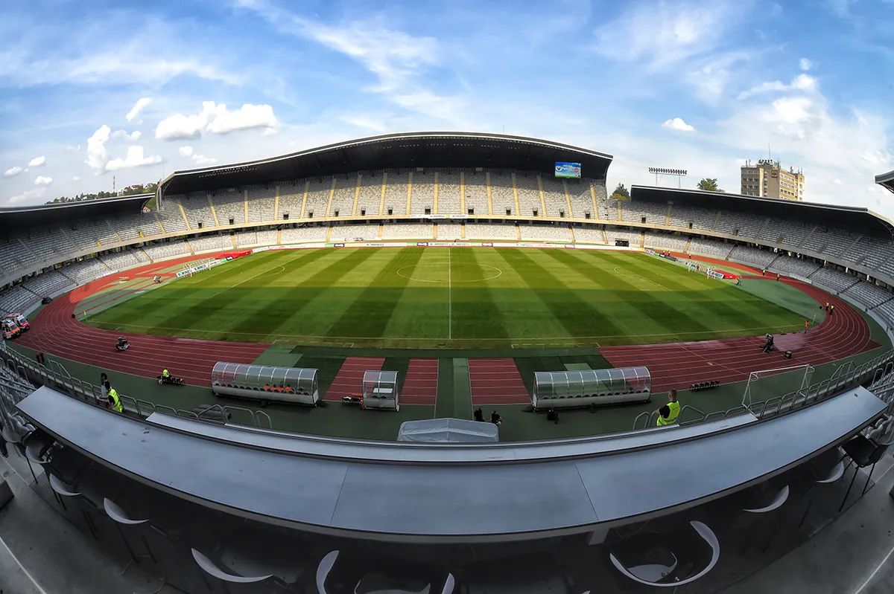
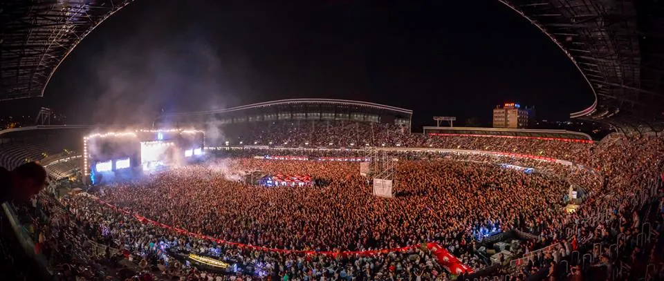
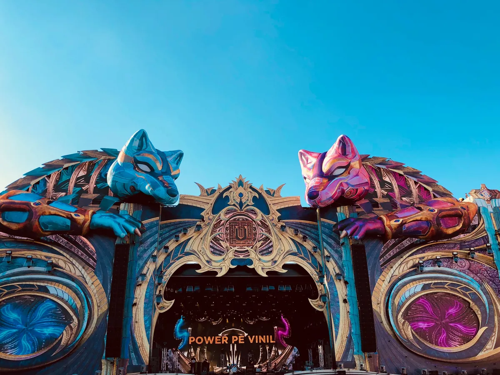
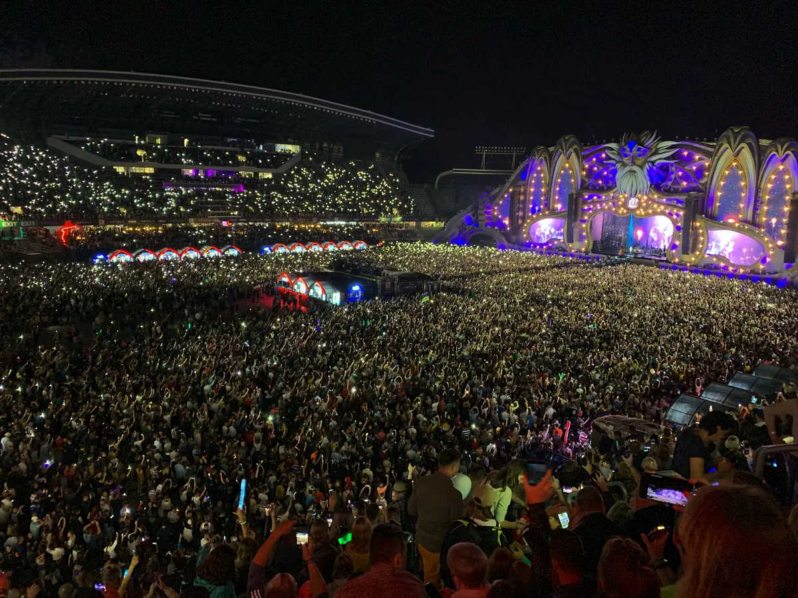
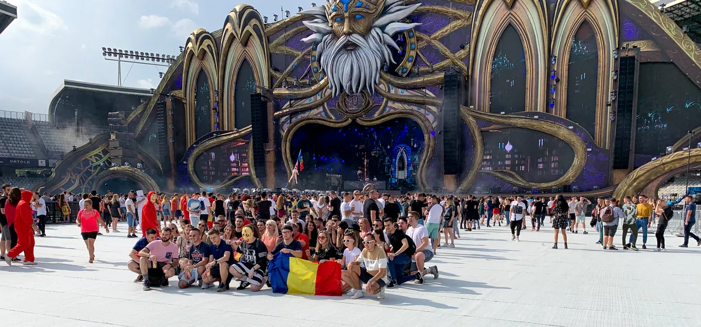

Untold
Untold Festival
Four days every August in a football stadium and a city park in Transylvania. When the next one is, where it happens, how big it is, who runs it, and what plays past the main stage.
A festival built for a city's year.
Untold began with a title the city had won. In 2015 Cluj-Napoca was European Youth Capital, and a festival was built for that year in the city's football stadium and the park beside it. It has come back every summer since, bar the pandemic, and in DJ Mag's festival poll it now sits behind only Tomorrowland and EDC Las Vegas.
What is Untold Festival to someone who has never been to Romania? This guide covers when Untold 2027 is, where Untold happens, how big it is, who started it, and why a festival in Transylvania got so famous. Then it answers the question this site is here for: past the main stage, what does the Untold music festival actually play?
Untold 2027: dates and the Star Edition.
Untold Festival 2027 is on 5 to 8 August 2027, Thursday to Sunday, at Cluj Arena in Cluj-Napoca. The festival calls it the Star Edition, its twelfth, and four-day passes are on sale through the official ticket shop. The official site had not published a 2027 lineup as of 15 September 2026.
Where Untold happens.
Where is Untold Festival? In Cluj-Napoca, the largest city in Transylvania. The Untold festival location is the city itself rather than a field outside it. The main stage is built inside Cluj Arena, a 30,355-seat football stadium that opened in 2011, and the other stages spread through the Central Park next to it and into the BTarena, a 10,000-capacity indoor hall beside the stadium that houses the techno stage. Listings call it Untold Cluj, Untold Cluj-Napoca, Untold festival Cluj or Untold festival Romania; it is the same event.

A festival in the middle of a city has a cost for the people who live there. For more than a week the Central Park and the ground around the stadium are fenced off, a children's hospital stands directly next to the festival site, and complaints about noise and fireworks through the night come back every year.
When is Untold? Every year in early August, over four days from Thursday to Sunday. In 2026 that was 6 to 9 August. The exceptions were the pandemic years: 2020 did not happen, and the 2021 edition was moved to 9 to 12 September.
Untold beyond Cluj
The same organisers now run a family of festivals. Neversea, a beach festival in Constanța on the Black Sea coast, has run since 2017; Massif, in the mountains at Poiana Brașov, since 2023; and Kapital, at the Arena Națională in Bucharest, since 2025. Untold Dubai, the first edition abroad, opened at Expo City Dubai in February 2024 with 185,000 admissions and moved to Dubai Parks and Resorts for its second edition, in November 2025. The rest of this guide is about the original, in Cluj.
How big Untold is.
How many people go to Untold? The festival reported more than 500,000 admissions for 2026, over four days and nine stages. That total adds up each day's count: the organisers reported more than 120,000 on the first day, 130,000 on the second, 135,000 on the third and 120,000 on the last. Someone with a four-day pass is counted each day they come in, so the number of different people is lower.
| Year | Dates | Admissions |
|---|---|---|
| 2015 | 30 July to 2 August | 240,000 |
| 2016 | 4 to 7 August | 300,000 |
| 2017 | 3 to 6 August | 340,000 |
| 2018 | 2 to 5 August | more than 355,000 |
| 2019 | 1 to 4 August | 370,000 |
| 2020 | Cancelled for the pandemic | |
| 2021 | 9 to 12 September | 265,000 |
| 2022 | 4 to 7 August | 360,000 |
| 2023 | 3 to 6 August | 420,000 |
| 2024 | 8 to 11 August | 427,000 |
| 2025 | 7 to 10 August | 470,000 |
| 2026 | 6 to 9 August | more than 500,000 |
The growth has been steady: 240,000 in the first year, 370,000 in 2019, and more than 400,000 every year since 2023. The one dip was 2021, the edition pushed into September by the pandemic, at 265,000.

Is Untold the biggest festival in the world? Not by any official measure. It is the largest music festival in Romania, and in DJ Mag's Top 100 Festivals, a readers' poll rather than a head count, it has come third every year since 2024. In 2026 only Tomorrowland and EDC Las Vegas finished above it.
A short history, and who runs Untold.
Untold was started by Bogdan Buta, now founder and CEO of Untold Universe. He had studied at the Technical University of Cluj-Napoca, where he took a doctorate in engineering and management, and had set up Omnipass, a network of benefits for students, in 2009. He also helped Cluj-Napoca win the title of European Youth Capital for 2015, and Untold was built for that year. The SHARE Cluj-Napoca Federation belonged to that launch context, but it is not the current organiser: the official terms for 2027 name Untold Live S.R.L.
The first edition ran from 30 July to 2 August 2015, mainly in Cluj Arena, with Armin van Buuren, Avicii, David Guetta, Dimitri Vegas & Like Mike and ATB at the top of the bill. It counted 240,000 admissions over four days. That winter it was named Best Major Festival at the European Festival Awards, the first time, the festival says, that the prize went to a first edition.
The second edition, in 2016, booked the top five of that year's DJ Mag poll of DJs, Tiësto, Hardwell, Martin Garrix, Dimitri Vegas & Like Mike and Armin van Buuren, with Afrojack beside them, on a budget its founder put at about €6 million. More than 30,000 of the 300,000 admissions were from abroad. By 2019 the first two rounds of passes, 15,000 each, sold out in three and ten minutes, and the edition counted 370,000.

The pandemic cancelled 2020, and the 2021 edition ran in September. From 2023 the count passed 400,000, and the festival began to travel, with Untold Dubai in 2024.
It has not been welcomed by everyone at home. In 2016 Romania's Court of Auditors found that the festival had been funded by the local authorities illegally, and later reporting questioned public land leased to it below market rates. A 2019 study of residents found that the festival restricted access to public space and brought noise, waste, traffic and higher prices to the city for its duration.
Why Untold is famous.
The first reason is the stage. The Untold main stage is rebuilt every year to a new design drawn from Romanian fairy tales and folklore, and each edition is billed as a chapter with its own title: Wolf Spirit in 2018, The Codex of Magic in 2019, Temple of Luna in 2022, The Light Phoenix in 2023, Human is Nature in 2024.

The second is the bookings. From its second year Untold has put the top of DJ Mag's DJ poll on one bill, and it keeps the biggest names coming back: Armin van Buuren headlined each of its first five editions, and Steve Aoki has been on almost every bill since 2017.
The third is the country. Mixmag and DJ Mag have credited Untold with making Romania a destination for electronic music, and the festival sold Transylvania along with the music. In 2016 the festival wristband gave half-price entry to Bran Castle, Corvin Castle and the Turda salt mine.

The fourth is the record. After the European Festival Award in its first year, Untold climbed DJ Mag's Top 100 Festivals, reaching sixth after its 2023 edition and third in 2024, a place it held in 2025 and 2026.
The festival's films have carried it further than any chart. Its official aftermovie from 2018, fifteen minutes cut from the edition titled Wolf Spirit, is the most watched video on its YouTube channel, at about 3 million views.
The music
What the music actually is.
The main stage belongs to EDM and to the DJs at the top of the DJ Mag poll: Armin van Buuren, Martin Garrix, David Guetta, Dimitri Vegas & Like Mike, Afrojack, Kygo, The Chainsmokers. What sets Untold apart is who stands on the same stage between them. Robbie Williams headlined in 2019, Imagine Dragons in 2023, Lenny Kravitz and Sam Smith in 2024, Post Malone in 2025, and Sting and Lewis Capaldi in 2026. Romanian artists usually open the main stage, and stars such as Inna, Delia and Irina Rimes had their own moments at the tenth edition. Some names return year after year: Lost Frequencies, Alan Walker and Timmy Trumpet have each played more than one edition.
The smaller stages each have a sound. Galaxy, in the BTarena, is the techno stage; Fortune is for trance; Daydreaming for chill and afro house; Alchemy for urban music and trap. Retro plays old hits, and the Tram stage is built into a tram and given to local DJs. Carl Cox, Solomun, Paul Kalkbrenner, Eric Prydz and Fisher are among the techno and house names who have played.
Mixmag filmed techno at Untold in 2018. Pan-Pot's set is one of only two Untold sets among the DJ sets behind the Selector, and by the catalogue's count it has 153,212 views on Mixmag's channel.
That is the shape of the festival: EDM and pop on a stadium stage, and the techno, trance and house in the rooms around it.
Hearing Untold from home.
The festival's own channel is mostly aftermovies and announcements. The Untold live sets worth hearing are on the artists' channels, and only two of the DJ sets behind the Selector are from Untold, both Mixmag techno films from 2018. So the players here come from the artists.
The two below are the most watched. Armin van Buuren's set from 5 August 2017, five and a half hours and 125 trance tracks on the main stage, has about 7.9 million views on his own channel, more than any other Untold set we found. He went further two years later, with a set of about seven and a half hours and more than 130 tracks at the 2019 edition. Steve Aoki posted his 2021 headline set, from the September edition after the pandemic, on his channel, where it has about 532,000 views.
Untold shares DJ Mag's top three with Tomorrowland and EDC Las Vegas, and our guides cover both, as well as Ultra, whose European edition in Split is the summer trip many weigh against it, Creamfields and Parookaville. And the Selector plays a DJ set at random from 62,824, if you would rather not choose. Comparing it with other festivals? See the best electronic music festivals in Europe.
Untold FAQ.
When is Untold 2027?
On 5 to 8 August 2027, Thursday to Sunday, in Cluj-Napoca. The festival calls its twelfth edition the Star Edition.
Where is Untold Festival?
In Cluj-Napoca, in Transylvania, north-western Romania. The main stage is inside the Cluj Arena stadium, and the other stages are in the Central Park beside it and in the BTarena indoor hall.
Is Untold the biggest festival in the world?
Not by any official measure. It is Romania's largest music festival, it reported more than 500,000 admissions over four days in 2026, and DJ Mag's readers voted it third in the world in 2024, 2025 and 2026, behind Tomorrowland and, in 2026, EDC Las Vegas.
How many people go to Untold?
More than 500,000 admissions over four days in 2026, counted day by day, with between 120,000 and 135,000 each day. A four-day pass is counted every day it is used, so fewer different people attend.
Untold or Ultra Europe?
They are different trips. Untold is four days in a Transylvanian city every August, with EDM and pop on a stadium main stage. Ultra Europe is three nights in Split, on the Croatian coast, in July, followed by boat and island parties. In DJ Mag's 2026 festival poll Untold came third and Ultra, counted with its Miami flagship, fourth.
Sources.
- Wikipedia: Untold Festival
- Wikipedia (Romanian): Untold Festival
- Wikipedia: Cluj Arena
- Wikipedia: BTarena
- Republica: interview with Bogdan Buta, founder of UNTOLD (Romanian, archived)
- Pollstar: Untold Festival Romania counts more than 500,000 visitors across four days
- UNTOLD: official site
- UNTOLD: official ticket shop for 2027
- UNTOLD: official terms for the 2027 festival
- UNTOLD: official festival history and attendance
- UNTOLD: investment page and leadership
- DJ Mag: Untold Festival, Top 100 Festivals 2026
- DJ Mag: Armin van Buuren shares full seven-hour Untold Festival set
- Armin van Buuren: Live at Untold Festival 2017 (5,5 hours set)
- Digi24: Curtea de Conturi: UNTOLD, finanțat ilegal de autorități (Romanian)
- Moisescu et al.: The UNTOLD story, Worldwide Hospitality and Tourism Themes, 2019
Continue reading
Read next.
 A17Guide / Tomorrowland / ~10 min
A17Guide / Tomorrowland / ~10 minTomorrowland Festival: Where It Is, How Big, and the Music
A park in Boom, Belgium, that most of the world knows through a livestream: where Tomorrowland happens, how big it is, who owns it, and what plays off the Mainstage.
Read article → A18Guide / EDC Las Vegas / ~12 min
A18Guide / EDC Las Vegas / ~12 minEDC Las Vegas: What It Is, How Big, and the Music
Electric Daisy Carnival at the Las Vegas Motor Speedway: where EDC happens, how half a million people a year grew out of a field in Chino, and what plays past kineticFIELD.
Read article → A19Guide / Creamfields / ~11 min
A19Guide / Creamfields / ~11 minCreamfields Festival: Where It Is, How It Grew, the Music
Four days on the Daresbury estate every August bank holiday: where Creamfields happens, how a Liverpool house night grew into it, who owns it, and what plays beyond the Arc Stage.
Read article → A20Guide / Parookaville / ~11 min
A20Guide / Parookaville / ~11 minParookaville Festival: Where It Is, Who Runs It, the Music
A festival staged as a city on an old RAF airbase at Weeze: where Parookaville happens, how three friends built it, how many people go, who runs it, and what plays there.
Read article →